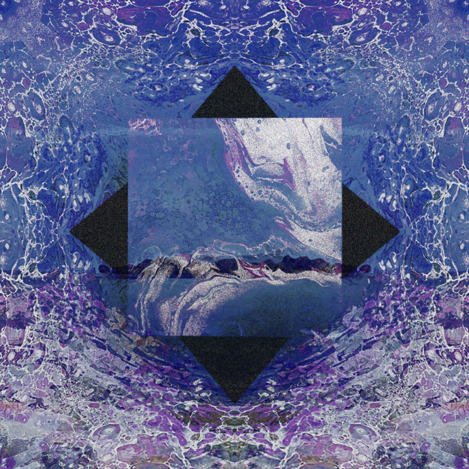
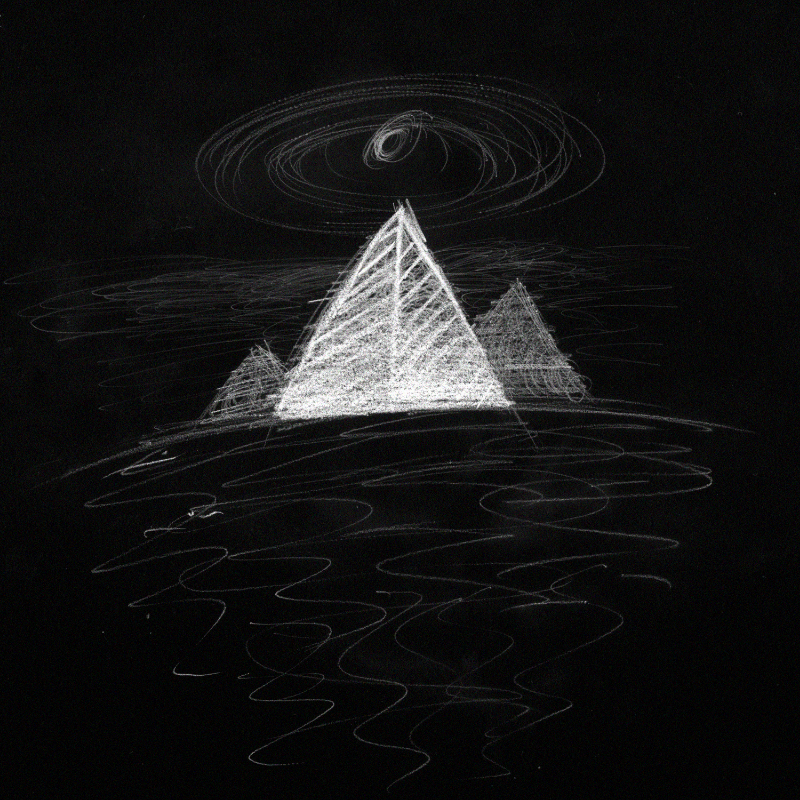
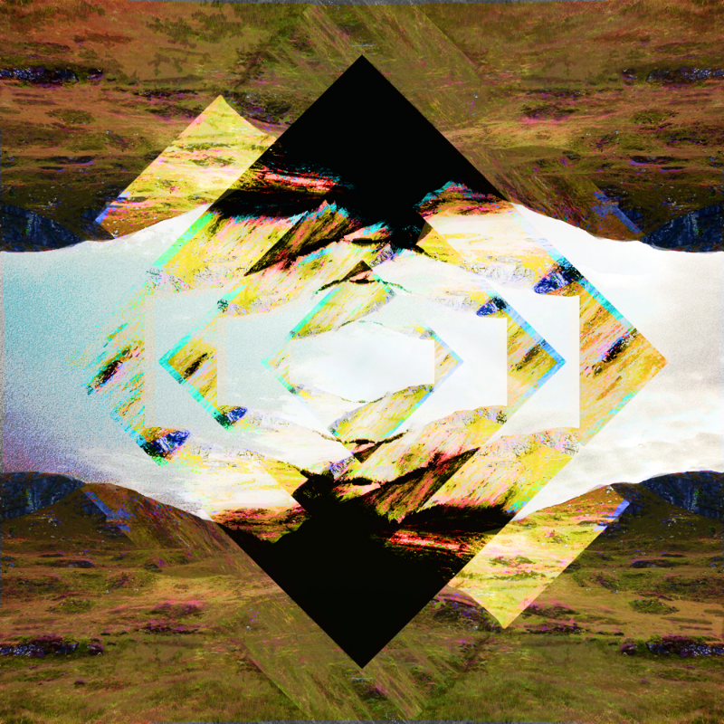
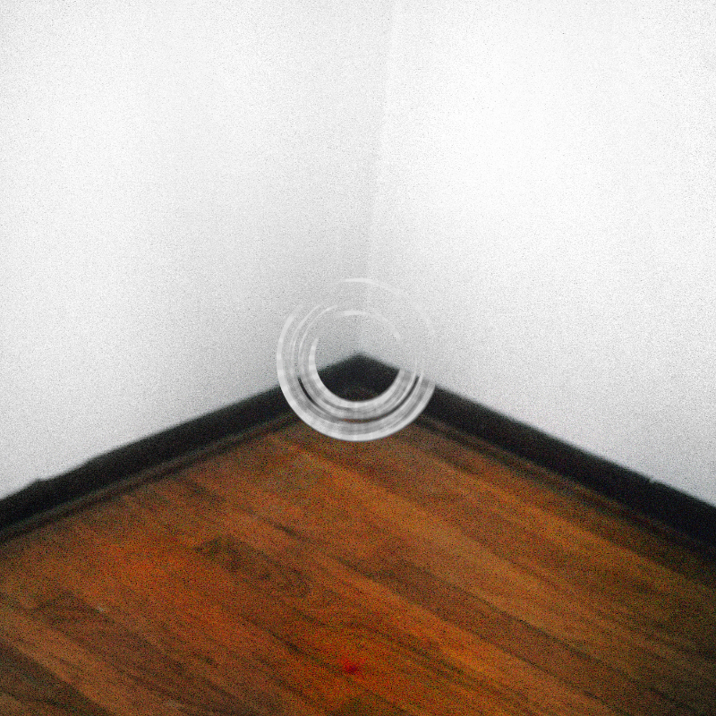
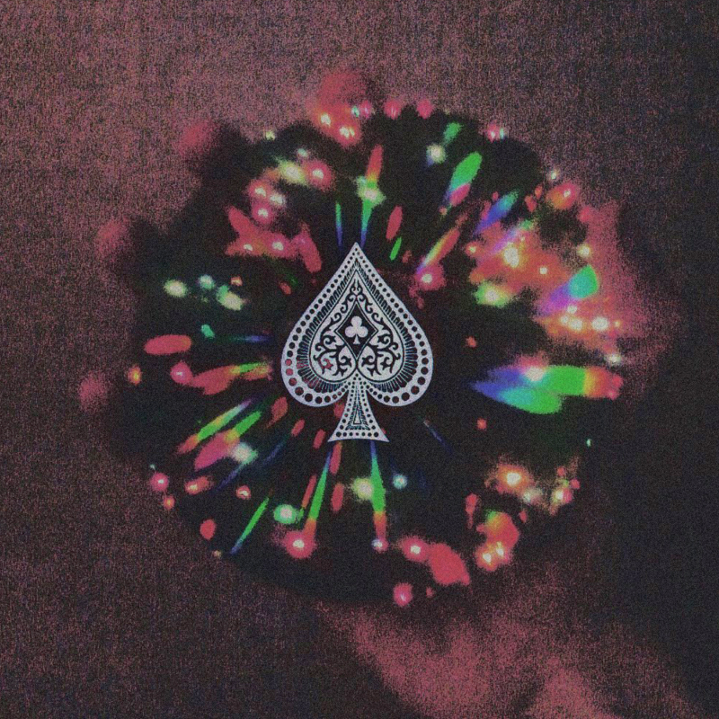

2026-08-21
2025-07-14
2024-05-10
Lately Kind of Yeah is the creative work of Chicago-based musician and designer Nathan Rich a.k.a. Nathaniel Riffs.
"... he weaves transgressive patterns with guitars, evoking dislocated environments and bewildering moods—inspired by everything from mesmerizing American guitar primitivism, the illustrious tradition of home recording, tectonic minimalism, to a contempt for 'proper' music and 'conventional' production techniques ..."
-Borealiscape
"... the song 'Chaotic Nothing' by Lately Kind of Yeah really hyper influenced me; it's a sort of post-rock ambient chamber jazz and just so hypnotic. I had this song on repeat for weeks and weeks and I couldn't stop showing it to friends."
-Derek Piotr
"... masterfully blends shoegaze, drone, and synthpop, always pushing the boundaries of the experimental."
-Ziklibrenbib
"At times the guitar seems to be 'tortured' on prepared setups and arrangements full of slamming noises, elliptic sonic effects, electro-acoustic shrieks, warped chords and majestic wall of sounds. It is mostly all about the technical possibilities one could get out of the instrument. (...) Indeed, at times it chimes like a lighter version of Glenn Branca or Sonic Youth."
-Borealiscape
2025-07-14
2024-05-10
2024-02-19
2020-05-22
2017-10-04
2015-11-22
2014-01-20
2011-07-01
2009-10-19
2026-08-21
2026-08-21
2026-08-20
2026-08-20
2026-08-20
2025-07-02
2012-12-18
2026-03-07
2024-04-30
2024-01-17
2023-07-13
2019-12-06
2019-08-09
2019-07-26
2019-05-31
2019-04-05
2017-07-18
2016-09-19
2015-11-25
2015-05-27
2015-05-19
2011-08-13
2015-07-17
2015-02-04
2013-09-24
2013-05-21
2013-04-20
2012-11-10
2012-05-26
2012-01-31